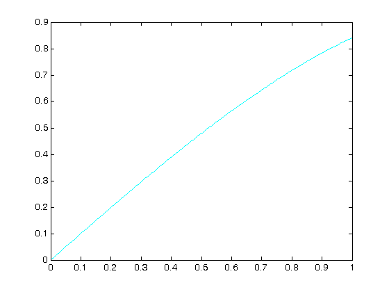
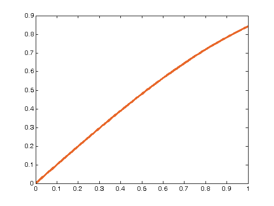

Contents
using rgbcolors in plots
John Kitchin
The standard colors available in plotting are not that pretty: b blue g green r red c cyan m magenta y yellow k black w white
yellow is particularly hard to see.
clear all; close all; clc; x = linspace(0,1); y = sin(x); figure plot(x,y,'y-')

plot(x,y,'c-')
 using cmu.colors
the cmu.colors provides a function to get a lot of colors darkorange is much easier to see than the default yellow
c = @cmu.colors; figure plot(x,y,'color',c('deep carrot orange'),'linewidth',3)
List of available colors
c('list')
ans =
'air force blue'
'alice blue'
'alizarin crimson'
'almond'
'amaranth'
'amber'
'amber (sae/ece)'
'american rose'
'amethyst'
'android green'
'anti-flash white'
'antique brass'
'antique fuchsia'
'antique white'
'ao (english)'
'apple green'
'apricot'
'aqua'
'aquamarine'
'army green'
'arsenic'
'arylide yellow'
'ash grey'
'asparagus'
'atomic tangerine'
'auburn'
'aureolin'
'aurometalsaurus'
'awesome'
'azure'
'azure mist/web'
'baby blue'
'baby blue eyes'
'baby pink'
'ball blue'
'banana mania'
'banana yellow'
'battleship grey'
'bazaar'
'bear'
'beau blue'
'beaver'
'beige'
'bisque'
'bistre'
'bittersweet'
'black'
'blanched almond'
'bleu de france'
'blizzard blue'
'blond'
'blue'
'blue (munsell)'
'blue (ncs)'
'blue (pigment)'
'blue (ryb)'
'blue bell'
'blue gray'
'blue-green'
'blue-violet'
'blush'
'bole'
'bondi blue'
'boston university red'
'boysenberry'
'brandeis blue'
'brass'
'brick red'
'bright cerulean'
'bright green'
'bright lavender'
'bright maroon'
'bright pink'
'bright turquoise'
'bright ube'
'brilliant lavender'
'brilliant rose'
'brink pink'
'british racing green'
'bronze'
'brown (traditional)'
'brown (web)'
'bubble gum'
'bubbles'
'buff'
'bulgarian rose'
'burgundy'
'burlywood'
'burnt orange'
'burnt sienna'
'burnt umber'
'byzantine'
'byzantium'
'cadet'
'cadet blue'
'cadet grey'
'cadmium green'
'cadmium orange'
'cadmium red'
'cadmium yellow'
'café au lait'
'café noir'
'cal poly pomona green'
'cambridge blue'
'camel'
'camouflage green'
'canary yellow'
'candy apple red'
'candy pink'
'capri'
'caput mortuum'
'cardinal'
'caribbean green'
'carmine'
'carmine pink'
'carmine red'
'carnation pink'
'carnelian'
'carolina blue'
'carrot orange'
'ceil'
'celadon'
'celeste (colour)'
'celestial blue'
'cerise'
'cerise pink'
'cerulean'
'cerulean blue'
'cg blue'
'cg red'
'chamoisee'
'champagne'
'charcoal'
'chartreuse (traditional)'
'chartreuse (web)'
'cherry blossom pink'
'chestnut'
'chocolate (traditional)'
'chocolate (web)'
'chrome yellow'
'cinereous'
'cinnabar'
'cinnamon'
'citrine'
'classic rose'
'cobalt'
'cocoa brown'
'coffee'
'columbia blue'
'cool black'
'cool grey'
'copper'
'copper rose'
'coquelicot'
'coral'
'coral pink'
'coral red'
'cordovan'
'corn'
'cornell red'
'cornflower blue'
'cornsilk'
'cosmic latte'
'cotton candy'
'cream'
'crimson'
'crimson glory'
'cyan'
'cyan (process)'
'daffodil'
'dandelion'
'dark blue'
'dark brown'
'dark byzantium'
'dark candy apple red'
'dark cerulean'
'dark champagne'
'dark chestnut'
'dark coral'
'dark cyan'
'dark electric blue'
'dark goldenrod'
'dark gray'
'dark green'
'dark jungle green'
'dark khaki'
'dark lava'
'dark lavender'
'dark magenta'
'dark midnight blue'
'dark olive green'
'dark orange'
'dark orchid'
'dark pastel blue'
'dark pastel green'
'dark pastel purple'
'dark pastel red'
'dark pink'
'dark powder blue'
'dark raspberry'
'dark red'
'dark salmon'
'dark scarlet'
'dark sea green'
'dark sienna'
'dark slate blue'
'dark slate gray'
'dark spring green'
'dark tan'
'dark tangerine'
'dark taupe'
'dark terra cotta'
'dark turquoise'
'dark violet'
'dartmouth green'
'davys grey'
'debian red'
'deep carmine'
'deep carmine pink'
'deep carrot orange'
'deep cerise'
'deep champagne'
'deep chestnut'
'deep coffee'
'deep fuchsia'
'deep jungle green'
'deep lilac'
'deep magenta'
'deep peach'
'deep pink'
'deep saffron'
'deep sky blue'
'denim'
'desert'
'desert sand'
'dim gray'
'dodger blue'
'dogwood rose'
'dollar bill'
'dolphin'
'drab'
'duke blue'
'earth yellow'
'ecru'
'eggplant'
'eggshell'
'egyptian blue'
'electric blue'
'electric crimson'
'electric cyan'
'electric green'
'electric indigo'
'electric lavender'
'electric lime'
'electric purple'
'electric ultramarine'
'electric violet'
'electric yellow'
'emerald'
'eton blue'
'fallow'
'falu red'
'fandango'
'fashion fuchsia'
'fawn'
'feldgrau'
'fern green'
'ferrari red'
'field drab'
'fire engine red'
'firebrick'
'flame'
'flamingo pink'
'flavescent'
'flax'
'floral white'
'fluorescent orange'
'fluorescent pink'
'fluorescent yellow'
'folly'
'forest green (traditional)'
'forest green (web)'
'french beige'
'french blue'
'french lilac'
'french rose'
'fuchsia'
'fuchsia pink'
'fulvous'
'fuzzy wuzzy'
'gainsboro'
'gamboge'
'ghost white'
'ginger'
'glaucous'
'glitter'
'gold (metallic)'
'gold (web) (golden)'
'golden brown'
'golden poppy'
'golden yellow'
'goldenrod'
'granny smith apple'
'gray'
'gray (html/css gray)'
'gray (x11 gray)'
'gray-asparagus'
'green (color wheel) (x11 green)'
'green (html/css green)'
'green (munsell)'
'green (ncs)'
'green (pigment)'
'green (ryb)'
'green-yellow'
'grullo'
'guppie green'
'halaya ube'
'han blue'
'han purple'
'hansa yellow'
'harlequin'
'harvard crimson'
'harvest gold'
'heart gold'
'heliotrope'
'hollywood cerise'
'honeydew'
'hookers green'
'hot magenta'
'hot pink'
'hunter green'
'iceberg'
'icterine'
'inchworm'
'india green'
'indian red'
'indian yellow'
'indigo (dye)'
'indigo (web)'
'international klein blue'
'international orange'
'iris'
'isabelline'
'islamic green'
'ivory'
'jade'
'jasmine'
'jasper'
'jazzberry jam'
'jonquil'
'june bud'
'jungle green'
'kelly green'
'khaki (html/css) (khaki)'
'khaki (x11) (light khaki)'
'ku crimson'
'la salle green'
'languid lavender'
'lapis lazuli'
'laser lemon'
'laurel green'
'lava'
'lavender (floral)'
'lavender (web)'
'lavender blue'
'lavender blush'
'lavender gray'
'lavender indigo'
'lavender magenta'
'lavender mist'
'lavender pink'
'lavender purple'
'lavender rose'
'lawn green'
'lemon'
'lemon chiffon'
'light apricot'
'light blue'
'light brown'
'light carmine pink'
'light coral'
'light cornflower blue'
'light crimson'
'light cyan'
'light fuchsia pink'
'light goldenrod yellow'
'light gray'
'light green'
'light khaki'
'light mauve'
'light pastel purple'
'light pink'
'light salmon'
'light salmon pink'
'light sea green'
'light sky blue'
'light slate gray'
'light taupe'
'light thulian pink'
'light timberwolf'
'light yellow'
'lilac'
'lime (color wheel)'
'lime (web) (x11 green)'
'lime green'
'lincoln green'
'linen'
'lion'
'liver'
'lust'
'magenta'
'magenta (dye)'
'magenta (process)'
'magic mint'
'magnolia'
'mahogany'
'maize'
'majorelle blue'
'malachite'
'manatee'
'mango tango'
'mantis'
'maroon (html/css)'
'maroon (x11)'
'mauve'
'mauve taupe'
'mauvelous'
'maya blue'
'meat brown'
'medium aquamarine'
'medium blue'
'medium candy apple red'
'medium carmine'
'medium champagne'
'medium electric blue'
'medium jungle green'
'medium lavender magenta'
'medium orchid'
'medium persian blue'
'medium purple'
'medium red-violet'
'medium sea green'
'medium slate blue'
'medium spring bud'
'medium spring green'
'medium taupe'
'medium teal blue'
'medium turquoise'
'medium violet-red'
'melon'
'midnight blue'
'midnight green (eagle green)'
'mikado yellow'
'mint'
'mint cream'
'mint green'
'misty rose'
'moccasin'
'mode beige'
'moonstone blue'
'mordant red 19'
'moss green'
'mountain meadow'
'mountbatten pink'
'msu green'
'mulberry'
'munsell'
'mustard'
'myrtle'
'nadeshiko pink'
'napier green'
'naples yellow'
'navajo white'
'navy blue'
'neon carrot'
'neon fuchsia'
'neon green'
'non-photo blue'
'north texas green'
'ocean boat blue'
'ochre'
'office green'
'old gold'
'old lace'
'old lavender'
'old mauve'
'old rose'
'olive'
'olive drab #7'
'olive drab (web) (olive drab #3)'
'olivine'
'onyx'
'opera mauve'
'orange (color wheel)'
'orange (ryb)'
'orange (web color)'
'orange peel'
'orange-red'
'orchid'
'otter brown'
'ou crimson red'
'outer space'
'outrageous orange'
'oxford blue'
'pakistan green'
'palatinate blue'
'palatinate purple'
'pale aqua'
'pale blue'
'pale brown'
'pale carmine'
'pale cerulean'
'pale chestnut'
'pale copper'
'pale cornflower blue'
'pale gold'
'pale goldenrod'
'pale green'
'pale magenta'
'pale pink'
'pale plum'
'pale red-violet'
'pale robin egg blue'
'pale silver'
'pale spring bud'
'pale taupe'
'pale violet-red'
'pansy purple'
'papaya whip'
'paris green'
'pastel blue'
'pastel brown'
'pastel gray'
'pastel green'
'pastel magenta'
'pastel orange'
'pastel pink'
'pastel purple'
'pastel red'
'pastel violet'
'pastel yellow'
'patriarch'
'paynes grey'
'peach'
'peach puff'
'peach-orange'
'peach-yellow'
'pear'
'pearl'
'pearl aqua'
'peridot'
'periwinkle'
'persian blue'
'persian green'
'persian indigo'
'persian orange'
'persian pink'
'persian plum'
'persian red'
'persian rose'
'persimmon'
'phlox'
'phthalo blue'
'phthalo green'
'piggy pink'
'pine green'
'pink'
'pink pearl'
'pink sherbet'
'pink-orange'
'pistachio'
'platinum'
'plum (traditional)'
'plum (web)'
'polar bear'
'portland orange'
'powder blue (web)'
'princeton orange'
'prune'
'prussian blue'
'psychedelic purple'
'puce'
'pumpkin'
'purple (html/css)'
'purple (munsell)'
'purple (x11)'
'purple heart'
'purple mountain majesty'
'purple pizzazz'
'purple taupe'
'quartz'
'radical red'
'raspberry'
'raspberry glace'
'raspberry pink'
'raspberry rose'
'raw umber'
'razzle dazzle rose'
'razzmatazz'
'red'
'red (munsell)'
'red (ncs)'
'red (pigment)'
'red (ryb)'
'red-brown'
'red-violet'
'redwood'
'regalia'
'rich black'
'rich brilliant lavender'
'rich carmine'
'rich electric blue'
'rich lavender'
'rich lilac'
'rich maroon'
'rifle green'
'robin egg blue'
'rose'
'rose bonbon'
'rose ebony'
'rose gold'
'rose madder'
'rose pink'
'rose quartz'
'rose taupe'
'rose vale'
'rosewood'
'rosso corsa'
'rosy brown'
'royal azure'
'royal blue (traditional)'
'royal blue (web)'
'royal fuchsia'
'royal purple'
'ruby'
'ruddy'
'ruddy brown'
'ruddy pink'
'rufous'
'russet'
'rust'
'sacramento state green'
'saddle brown'
'safety orange (blaze orange)'
'saffron'
'salmon'
'salmon pink'
'sand'
'sand dune'
'sandstorm'
'sandy brown'
'sandy taupe'
'sangria'
'sap green'
'sapphire'
'satin sheen gold'
'scarlet'
'school bus yellow'
'screamin green'
'sea green'
'seal brown'
'seashell'
'selective yellow'
'sepia'
'shadow'
'shamrock green'
'shocking pink'
'sienna'
'silver'
'sinopia'
'skobeloff'
'sky blue'
'sky magenta'
'slate blue'
'slate gray'
'smalt (dark powder blue)'
'smokey topaz'
'smoky black'
'snow'
'spiro disco ball'
'splashed white'
'spring bud'
'spring green'
'st. patricks blue'
'steel blue'
'stil de grain yellow'
'stizza'
'straw'
'sunglow'
'sunset'
'tan'
'tangelo'
'tangerine'
'tangerine yellow'
'taupe'
'taupe gray'
'tea green'
'tea rose (orange)'
'tea rose (rose)'
'teal'
'teal blue'
'teal green'
'tenné (tawny)'
'terra cotta'
'thistle'
'thulian pink'
'tickle me pink'
'tiffany blue'
'tigers eye'
'timberwolf'
'titanium yellow'
'tomato'
'toolbox'
'topaz'
'tractor red'
'trolley grey'
'tropical rain forest'
'true blue'
'tufts blue'
'tumbleweed'
'turkish rose'
'turquoise'
'turquoise blue'
'turquoise green'
'tuscan red'
'twilight lavender'
'tyrian purple'
'ua blue'
'ua red'
'ube'
'ucla blue'
'ucla gold'
'ufo green'
'ultra pink'
'ultramarine'
'ultramarine blue'
'umber'
'united nations blue'
'university of california gold'
'unmellow yellow'
'up forest green'
'up maroon'
'upsdell red'
'urobilin'
'usc cardinal'
'usc gold'
'utah crimson'
'vanilla'
'vegas gold'
'venetian red'
'verdigris'
'vermilion'
'veronica'
'violet'
'violet (color wheel)'
'violet (ryb)'
'violet (web)'
'viridian'
'vivid auburn'
'vivid burgundy'
'vivid cerise'
'vivid tangerine'
'vivid violet'
'warm black'
'wenge'
'wheat'
'white'
'white smoke'
'wild blue yonder'
'wild strawberry'
'wild watermelon'
'wine'
'wisteria'
'xanadu'
'yale blue'
'yellow'
'yellow (munsell)'
'yellow (ncs)'
'yellow (process)'
'yellow (ryb)'
'yellow orange'
'yellow-green'
'zaffre'
'zinnwaldite brown'